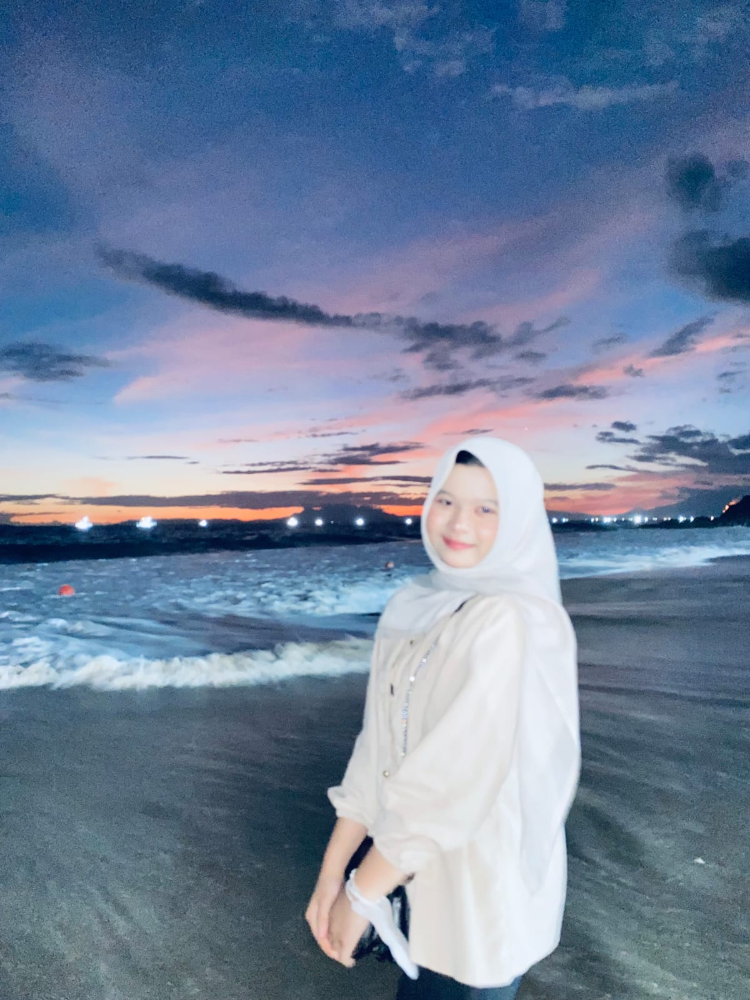
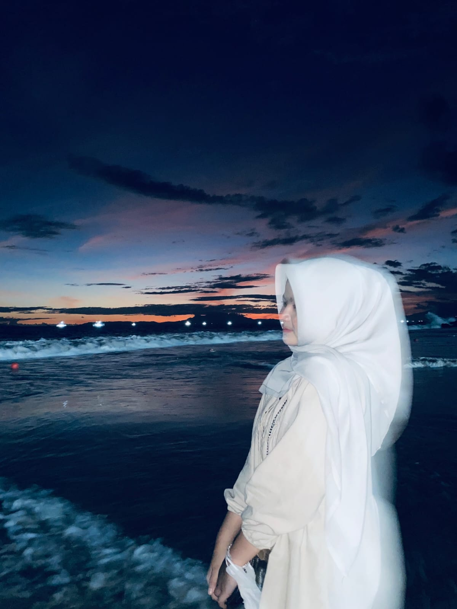

Sebagai mahasiswa Sistem Informasi, aku menyadari bahwa minat aku tidak sepenuhnya berada pada dunia IT. Namun, selama menjalani perkuliahan aku belajar untuk tetap bertanggung jawab, disiplin, dan mampu beradaptasi dengan berbagai bidang yang saya pelajari. aku lebih tertarik pada kemampuan mengelola, berkomunikasi, dan memecahkan masalah, sehingga aku ingin memanfaatkan ilmu Sistem Informasi sebagai bekal untuk berkembang di bidang lain yang lebih sesuai dengan minat aku


Nama lengkap Aku aulia hanum, aku lahir pada hari sabtu tanggal 25 bulan Agustus Tahun 2007, sekarang usiaku belum genap 19 thn, warna kesukaan ku hitam dan biru
Kegiatan sehari-hari aku biasanya diisi dengan kuliah, mengerjakan tugas, gotong royong di kost-kostan, serta menghabiskan waktu dengan bermain media sosial atau mendengarkan musik. Saat memiliki waktu luang,
aku juga senang beristirahat dan mencoba hal-hal baru.
Ketika merasa sedih, aku biasanya pergi ke tempat yang tenang seperti kamar, pantai, atau tempat favorit yang membuat aku merasa lebih nyaman.
Sedangkan ketika sedang senang,aku sering mengunjungi atau berkumpul bersama teman dan keluarga.